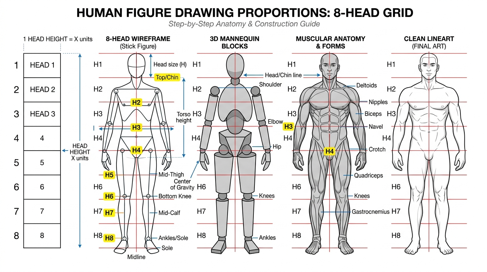
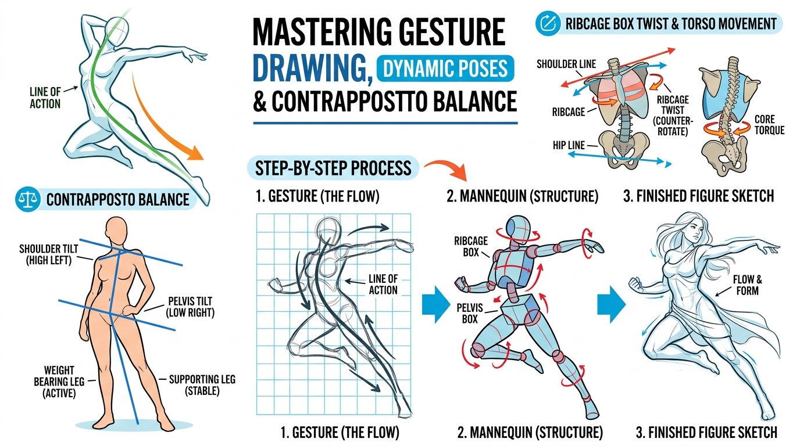
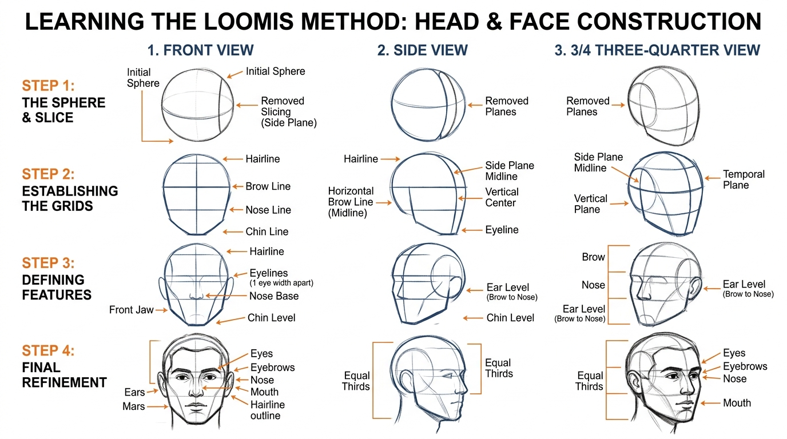
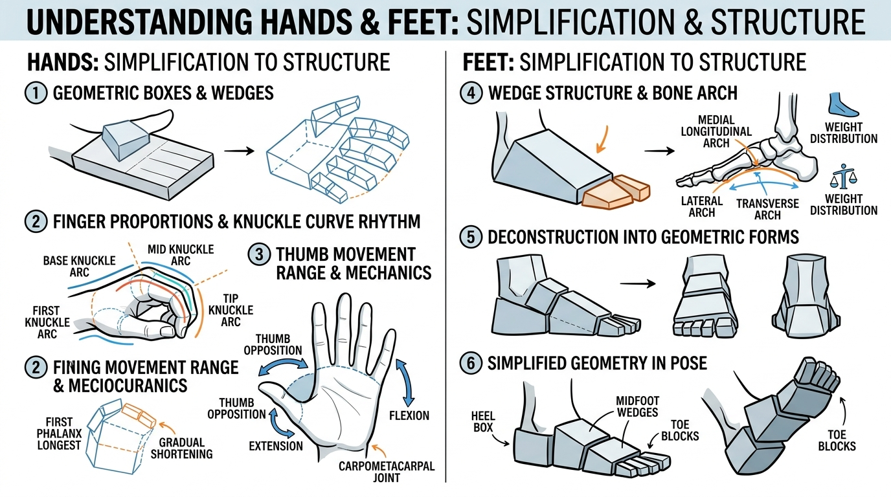

인체를 그리는 5단계 레이어를 직접 켜고 꺼보세요
비율 그리드부터 제스처 흐름선, 관절 뼈대, 3D 도형화 매니킨, 그리고 근육 라인까지! 실시간으로 각 레이어를 중첩하여 구조를 직관적으로 이해할 수 있습니다.
드로잉 레이어 제어기
실시간 중첩8등신 분할선 및 1/2 중심(가랑이) 랜드마크
척추의 C/S자 곡선과 어깨/골반 반대 기울기
어깨, 팔꿈치, 무릎 등 주요 회전축 구체
흉곽 상자, 골반 바가지, 팔다리 원기둥 볼륨
쇄골, 삼각근, 대흉근, 허벅지 대퇴사두근 굴곡
최종 정리된 인체 실루엣과 외곽 쉐이딩
등신 비율 변환기
8.0 등신 (이상적 히어로)(SD/캐주얼) 7.0등신
(동양인 평균) 7.5등신
(실사/서구) 8.0등신
(황금비율/패션)
인체 드로잉 절대 법칙 5가지
- 1. 정중앙 1/2 지점은 사타구니(가랑이)입니다. (상체 길이 = 하체 길이)
- 2. 팔꿈치는 배꼽/갈비뼈 하단(3등신)과 높이가 같습니다.
- 3. 손목은 사타구니선(4등신), 손끝은 허벅지 중간(5등신)에 닿습니다.
- 4. 무릎은 하체의 정중앙(6등신)에 위치합니다.
- 5. 어깨 너비는 머리 가로 폭의 약 2~2.3배(남성 기준)입니다.
8등신 인체 비율 & 단계별 구축 인포그래픽
와이어프레임 뼈대에서 3D 박스 매니킨, 근육 해부학, 최종 선화까지의 단계별 전개

정수리부터 턱끝까지가 1등신. 2등신 지점에 쇄골(Clavicle)과 젖꼭지/가슴 하단선이 위치합니다.
3등신은 배꼽과 팔꿈치 높이. 4등신은 사타구니(가랑이)와 손목으로 인체의 정확한 1/2 분기점입니다.
5등신은 허벅지 중앙 및 손가락 끝. 6등신은 무릎 관절의 바로 아랫선으로 하체의 중심축입니다.
7등신은 종아리 알(비복근) 하단. 8등신은 복사뼈(발목)부터 발바닥 접지면까지 완성됩니다.
제스처 드로잉 & 콘트라포스토 (Contrapposto)
딱딱한 졸라맨을 벗어나 살아 숨쉬는 포즈를 만드는 척추 동세선과 어깨-골반 카운터 밸런스

정수리부터 발끝까지 이어지는 하나의 흐름선(C커브 또는 S커브)을 먼저 긋습니다. 복잡한 디테일 이전에 에너지의 방향성을 한 번에 잡아야 역동적인 그림이 됩니다.
체중을 실은 디딤발 쪽의 골반이 위로 올라가면, 균형을 맞추기 위해 어깨선은 반대 방향으로 기울어집니다. (골반 기울기 ≠ 어깨 기울기)
가슴 상자(흉곽)와 골반 상자는 항상 같은 각도를 보지 않습니다. 상체가 왼쪽을 보면 골반은 정면이나 오른쪽을 향해 비틀어질 때 자연스러운 입체감이 생깁니다.
구체와 십자선으로 정복하는 얼굴 각도 공식
정면, 측면, 반측면(3/4 View) 어디서든 어색하지 않은 이목구비 1/3 황금분할법

완벽한 원을 그리고, 인간 두상의 납작한 옆면(측두골)을 평면 타원으로 잘라냅니다.
[헤어라인 - 눈썹선 - 코끝선 - 턱끝선] 사이의 간격이 정확히 1:1:1로 3등분됩니다.
귀의 높이는 [눈썹선부터 코끝선까지]이며, 잘라낸 측두골 중심에서 턱으로 내려옵니다.
양 눈 사이의 간격은 눈 한 개 크기(1 Eye Width)이며, 입꼬리는 눈동자 중심선과 일치합니다.
가장 그리기 힘든 손과 발, 상자와 쐐기로 단순화하기
손바닥 상자(1) + 손가락(1) 비율과 부채꼴 너클 곡선, 발 아치와 쐐기 구조

손 드로잉 황금 규칙
- • 손바닥과 중지 손가락의 길이는 1:1입니다.
- • 너클(주먹 쥐는 마디) 라인은 일자가 아니라 완만한 아치형 곡선을 그립니다.
- • 엄지손가락은 손바닥 평면에서 90도 회전된 각도로 움직이는 쐐기 상자입니다.
발 드로잉 황금 규칙
- • 발은 직사각형이 아닌 뒤꿈치 상자 + 발등 쐐기(Wedge) + 발가락 블록 3단 결합체입니다.
- • 발 안쪽(엄지쪽)은 아치가 높아 들려있고, 바깥쪽(새끼쪽)이 바닥에 평평하게 닿습니다.
- • 복사뼈 높이: 안쪽 복사뼈가 바깥쪽 복사뼈보다 더 높습니다.
가이드를 배경에 깔고 직접 인체를 따라 그려보세요
마우스, 터치 또는 스타일러스 펜을 사용하여 비율과 골격을 체득할 수 있습니다.
드로잉 도구 설정
1. 선을 쪼개 쓰지 말고 한 붓에 시원하게 긋기
2. 손가락 관절보다 척추/골반 큰 덩어리 먼저 잡기
3. 1분 / 3분 타임어택으로 손 풀기